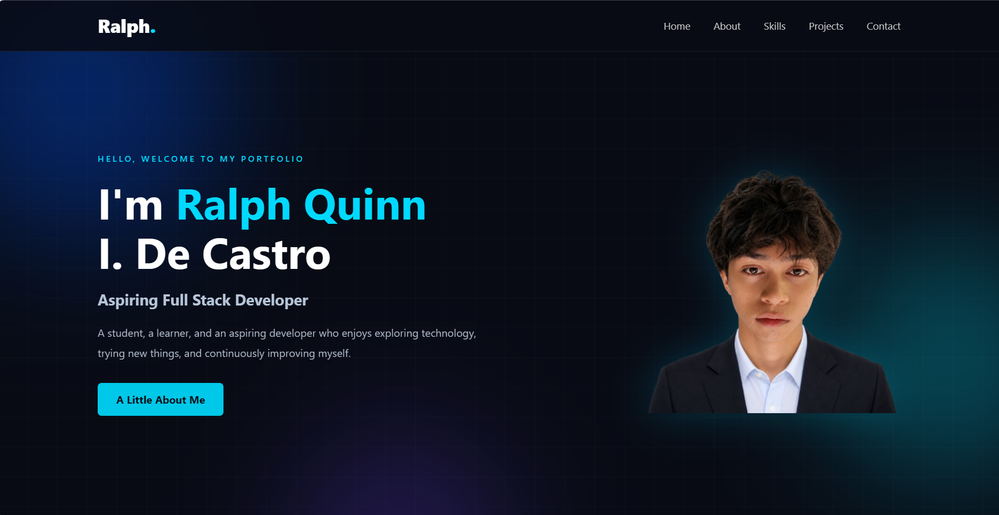

HELLO, WELCOME TO MY PORTFOLIO
A student, a learner, and an aspiring developer who enjoys exploring technology, trying new things, and continuously improving myself.
A Little About MeGET TO KNOW ME
Hello! I'm Ralph Quinn I. De Castro, a student at Mindoro State University currently taking the Bachelor of Science in Information Technology (BSIT) program. I am interested in technology and economic market awareness. I enjoy discovering new ideas, learning different things, and understanding how technology continues to shape our world. As someone who is still developing my skills, I believe that learning never stops. I always try to challenge myself, improve my knowledge, and become better through every experience. My goal is to become a Full Stack Developer and build useful, creative, and functional websites and applications in the future.
Name: Ralph Quinn I. De Castro
Education: BS Information Technology
University: Mindoro State University
Location: Calapan City, Oriental Mindoro
Career Goal: Full Stack Developer
WHAT I CAN DO
These are the skills I have developed and continue to improve throughout my learning journey.
Creating and structuring web pages using HyperText Markup Language.
Designing and styling websites with layouts, colors, and visual effects.
Developing programming knowledge and logical thinking using C# and C.
Exploring new ideas, experimenting, and finding creative solutions to problems.
MY FIRST STEP INTO TECHNOLOGY
Every journey begins with a first step, and this portfolio represents mine. It is my first-ever project involving coding and technology, where I had the opportunity to turn my ideas into something meaningful.

FIRST WEB DEVELOPMENT PROJECT
This personal portfolio website is my first step into the world of web development. Built using HTML and CSS, it represents my initial experience in combining code, creativity, and technology to create something of my own. As a beginner, this project has given me an opportunity to explore how websites are structured, designed, and presented. More than just a website, this project represents my willingness to learn, my curiosity to explore new possibilities, and my determination to continuously improve myself. I know this is only the beginning of my journey, but I am proud of taking this first step and excited about the things I can create and accomplish in the future.
LET'S CONNECT
Thank you for taking the time to visit my portfolio. You can find me through the following platforms.